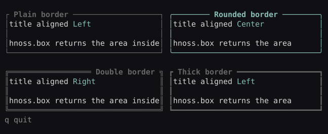
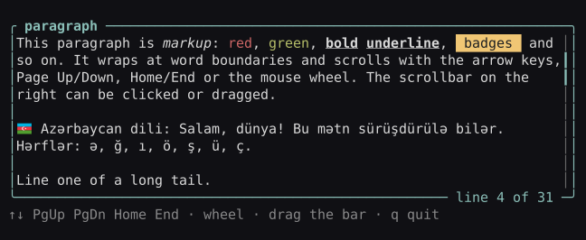
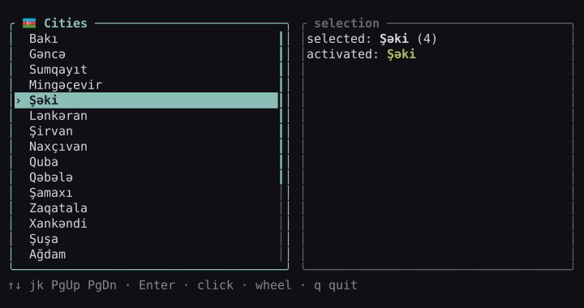
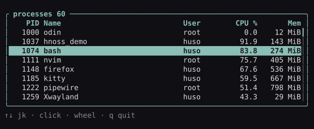
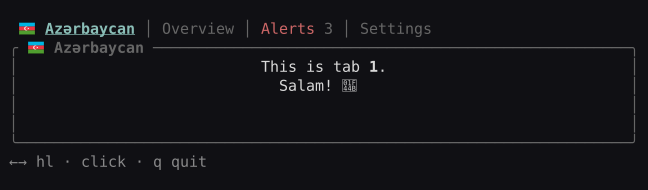
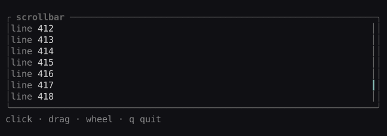
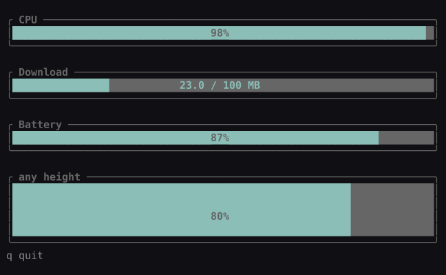
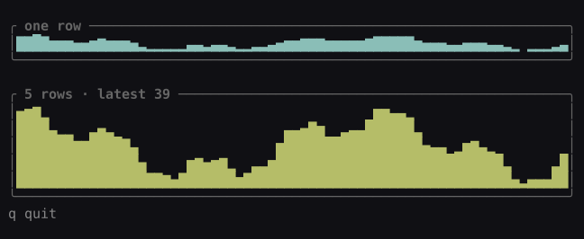
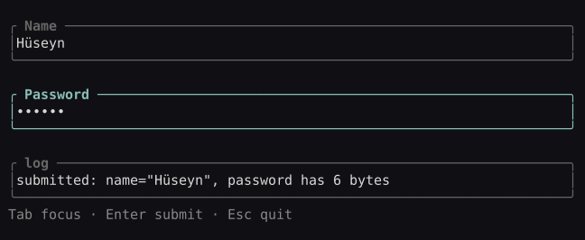
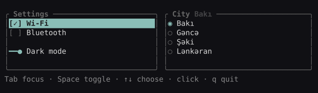

Widgets
Every widget is a procedure taking the frame's ^Ui. Stateful ones take a pointer to state you own, which is also their identity for focus. Each has a runnable example: ./build.sh run w_<name>.
box
A border with an optional markup title. Returns the area inside it, ready for the next widget.

| Box_Options | |
|---|---|
border | .Plain .Rounded .Double .Thick .None (default: theme.border_kind) |
focused | draw with theme.border_focused |
align | title alignment |
style · fill | extra border style · blank the inside with this style first |
label
One-off markup text in the theme's text style. For finer control use a pen.
paragraph
Wrapped, scrolling markup text with an optional scrollbar. Clicking it gives it focus.

Keys (focused): ↑ ↓ PgUp PgDn Home End · mouse wheel when hovered. Options: wrap, align, scrollbar.
list
A selectable, scrolling list. Returns true when the selection changed; state.activated is set for the frame Enter is pressed.

Keys (focused): ↑↓ or kj, PgUp PgDn Home End, Enter · click selects, wheel scrolls the view.
| Field | |
|---|---|
List_State | selected, offset (first visible), activated |
List_Options | marker (default "› "), markup (items are markup), scrollbar |
table
Rows of cells under a header. Columns are sized like a split; long cells end in …. Navigation and mouse work like list.

cols := []hnoss.Column{
{title = "PID", width = 7, align = .Right},
{title = "Name", width = hnoss.fill()},
{title = "CPU", width = hnoss.percent(10), align = .Right},
}
hnoss.table(ui, inner, cols, rows, &state, {scrollbar = true})tabs
A row of markup titles. The ^int is the state.

Keys (focused): ←→ or hl, Home End · click a title.
scrollbar
A vertical bar for total lines of which visible fit. Click the track to jump, drag the thumb (dragging keeps working outside the bar), or use the wheel. paragraph, list and table can draw one for you.

gauge
A progress bar of any height, filled in eighths of a cell. The label (default: the percentage) is centered and drawn inverted where it covers the bar.

sparkline
The most recent values as bars, newest on the right, eight levels per row. max_value = 0 scales to the largest value shown.

graph
An area chart in braille dots: each cell is 2 samples wide and 4 dots tall. Colors run along an optional gradient from bottom to top; downward grows from the top edge, for mirrored charts like the monitor's network panel.
hnoss.graph(ui, area, history[:], {
max_value = 100,
gradient = []hnoss.Rgb{{80, 250, 123}, {241, 250, 140}, {255, 85, 85}},
})input
A single-line text field. Edits by grapheme, scrolls to keep the caret visible and shows the terminal cursor at it. Keys it uses are consumed, so typing q into it never quits your app.

| Keys | |
|---|---|
| ← → Home End Ctrl+A/E | move |
| Ctrl+←/→ · Alt+B/F | move by word |
| Backspace Delete Ctrl+D | delete a character |
| Ctrl+W · Alt+Backspace | delete the previous word |
| Ctrl+U / Ctrl+K | delete to start / to end |
| Enter | sets state.submitted for this frame |
| paste | inserted with newlines turned into spaces |
search: hnoss.Input_State
defer hnoss.input_destroy(&search)
if hnoss.input(ui, field, &search, {placeholder = "filter…"}) {
filter(hnoss.input_text(&search))
}Options: placeholder, mask (e.g. "•" for passwords). Helpers: input_text, input_set, input_destroy.
checkbox · toggle · radio
The ^bool or ^int you pass is the state and the widget's identity for focus. Labels are markup. A focused choice is drawn like a selected list row; the mark uses theme.check.

Keys (focused): checkbox and toggle Space Enter · radio ↑↓ or kj, Home End · click to toggle or choose.
wifi := true
city := 0
hnoss.focus_order(ui, {&wifi, &city})
hnoss.checkbox(ui, hnoss.cut_top(&area, 1), "Wi-Fi", &wifi)
if hnoss.radio(ui, area, {"Bakı", "Gəncə", "Şəki"}, &city) {
reload(city)
}